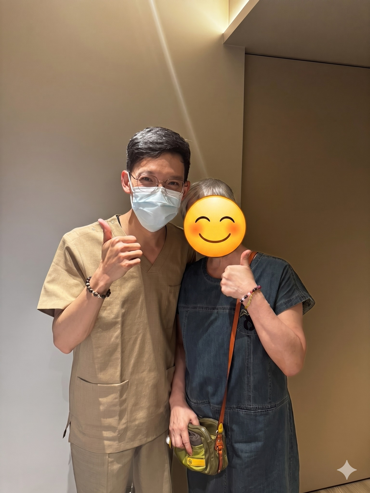

與十年的「耳鳴、腦鳴」告別：從頸椎到顱骨，找回寧靜的跨國醫病奇幻旅程
【 與十年的「耳鳴、腦鳴」告別：從頸椎到顱骨，找回寧靜的跨國醫病奇幻旅程 】
「醫師，不要不好意思問啦！如果沒有效，我今天就不會再走進來了！」
聽到 C 女士笑著對我說出這句話，我心底那顆懸著的石頭才真正放了下來。
今天，是她結束假期、返回瑞士前的最後一次看診；而這短短不到一個月的療程，我們共同完成了一項原本以為不可能的任務。
－
👿 被宣告「只能和平共處」的十年夢魘
長年定居瑞士的 C 女士，在這次回台渡假，偶然滑到了我兩年前關於耳鳴治療的貼文。
這十多年來，她飽受「高頻耳鳴」與持續性「腦鳴」的折磨。在瑞士與台灣，看遍了神經內科與耳鼻喉科，做完了所有能做的檢查。在排除器質性病變後，最終只能得到一句無奈的醫囑：「學著與它和平共處。」
尤其到了夜晚，腦海裡的嗡嗡聲更被無限放大，嚴重剝奪了她的睡眠，只能依賴安眠藥入睡。問診中，我捕捉到一個關鍵線索：“她在經歷過頸椎椎間盤突出手術後，耳鳴與腦鳴的聲音變得更大了！”
抱著「死馬當活馬醫」的心情，她在回瑞士前，把最後的希望交給了我。坦白說，單純耳鳴就已經是醫學上的「大魔王」，這次還合併了腦鳴，我有幾成把握？真的抓不準。但既然已經排除了器質性異常，從肌筋膜結構力學來看，實在沒有理由不拚一把。
－
🔍 破關第一步：脈象與理學檢查的雙重鎖定
結合中醫脈診與理學檢查，我們找到了肌筋膜張力系統當機的源頭：
當 C 女士平躺時，頸椎明顯偏離了身體中線，觸摸頭顱骨與顏面骨，也能察覺到顯著的張力歪斜。而脈象上的資訊，更精準地指出了「顳肌」、「胸鎖乳突肌」與「深層高位頸椎」的失能。
初次出手，解開頸部張力枷鎖：
我先透過肌筋膜乾針，處理脈象指出的頸部問題肌群；接著運用輕柔的徒手技巧，釋放高位頸椎的張力並重組排列，順勢調整了顳骨與枕骨的位置。
隔週回診時，我其實非常緊張。C 女士既訝異又開心地分享：治療後前兩天，右耳的耳鳴似乎變大聲了一些（這時我心裡OS：果然沒這麼簡單.....），但到了第三天，聲音開始急遽縮小！後來就幾乎沒聲音了！(誒?!! ....哎喲！可以誒！)
順著同樣的思路，我們在第二次治療後，左側的耳鳴也跟著大幅減退。到了第三次回診，兩側的耳鳴已經奇蹟似地「幾乎消失」了，只剩下深層的腦鳴。
🔓 破關第二步：顱骨骨病學的深層釋放
針對殘留的腦鳴，我們將戰場轉移。
這次脈診與理學檢查將矛頭指向了「枕下肌群」與「顱骨」。切換到顱骨骨病學（Cranial Osteopathy）的視角：
C0-C1-C2 張力釋放： 針對枕骨與高位頸椎的交界進行微觀調整。
硬腦膜與大腦鐮減壓： 透過感受顱骨的律動，對額骨與頂骨進行極輕柔的手法上提，釋放顱腔內部深層筋膜（硬腦膜）的張力。
第四次回診時，C 女士興奮地表示：腦鳴已經從「持續性的轟炸」，變成了「時有時無」的狀態，而且只在夜晚較為明顯。至於折磨她十年的耳鳴，是真的徹底消失了！
－
👨⚕️ 醫師的成就與感言
今天是她回瑞士前的最後一次治療。有了前面的經驗，我順著硬腦膜與顱骨的減壓手法繼續深化，對她未來腦鳴的持續改善，我也有了更篤定的把握。
耳鳴與腦鳴，在醫學上一直是非常困難的考題。但這次寶貴的經驗再次證實：有一部分的耳鳴（體感性耳鳴 Somatosensory Tinnitus），是真的能透過中醫脈診的精準定位、乾針的肌筋膜處理，以及高位頸椎與顱骨的手法釋放，找到重見光明的出口。
非常感謝 C 女士對我的完全信任，讓我能放手一搏，用我畢生所學，協助她找回寧靜的日子與安穩的睡眠。
我們相約年底她回台時再見，下次有機會，我也好想去瑞士旅遊啊！
#耳鳴 #腦鳴 #體感性耳鳴 #高位頸椎 #顱骨骨病學 #硬腦膜釋放 #肌筋膜乾針 #中醫徒手 #醫病關係 #找回寧靜
太初中醫診所 東門中醫
中醫師 黃彥鈞
🔎 實證醫學與延伸閱讀 (References)：
Michiels, S., et al. (2018). Conservative therapy for the treatment of patients with somatic tinnitus: a narrative review. Journal of Clinical Medicine.
(研究指出：由頸部肌肉骨骼系統異常（如高位頸椎失能、頸部肌群緊繃）所引發的體感性耳鳴，透過針對性的物理徒手治療與肌肉放鬆，能顯著降低耳鳴的嚴重程度。)
Bove, G. M., & Nilsson, N. (1998). Spinal manipulation in the treatment of episodic tension-type headache. JAMA. (延伸參考：高位頸椎與枕下肌群的張力釋放，對於改善頭顱內外筋膜張力與相關神經症狀具有臨床實證基礎。)
【 ⚠️ 免責聲明與就醫提醒 】
本文分享之臨床案例皆已進行去識別化與隱私保護處理。耳鳴與腦鳴之成因極為複雜，包含聽神經損傷、血管病變等器質性因素。若有耳鳴症狀，請務必先至耳鼻喉科或神經內科進行完整影像與聽力學檢查。在排除器質性病變後，方可尋求專業醫師進行頸椎與顱骨之結構理學評估。治療效果因人而異，請與您的醫師進行充分討論。
